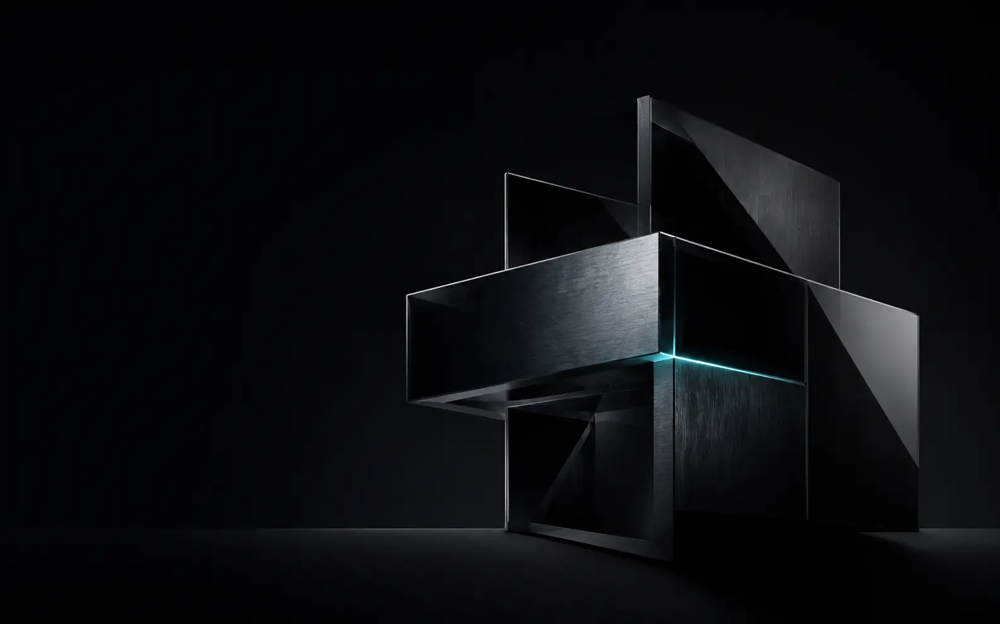

Der Webauftritt passt nicht mehr zum Unternehmen.
Leistungen sind schwer verständlich, die Gestaltung wirkt veraltet oder die Website erzeugt zu wenige passende Anfragen.
Digitalstudio für Unternehmen
vachsystems konzipiert und realisiert Unternehmenswebsites, individuelle Webanwendungen, Automatisierungen und praxisnahe KI-Workshops – direkt von der ersten Idee bis zur fertigen Lösung.

Wir unterstützen kleine und mittelständische Unternehmen dabei, professionell im Internet aufzutreten, eigene digitale Werkzeuge zu entwickeln und wiederkehrende Arbeit sinnvoll zu automatisieren.
Strategie, Gestaltung und technische Umsetzung kommen aus einer Hand. Sie haben einen direkten Ansprechpartner, klare Entscheidungen und eine Lösung, die für Ihren tatsächlichen Einsatz entwickelt wird.
Vier klar abgegrenzte Leistungsbereiche – einzeln beauftragbar oder als zusammenhängendes Digitalprojekt.
Konzeption, Webdesign, Texte und technische Entwicklung für neue Websites, Relaunches, Landingpages und digitale Plattformen.
Individuelle interne Werkzeuge, Kundenbereiche und Schnittstellen, wenn vorhandene Software den Prozess nicht passend abbildet.
Wir analysieren bestehende Abläufe, verbinden Daten und Anwendungen und integrieren KI dort, wo Ergebnisse kontrollierbar besser werden.
Praxisnahe Workshops mit Aufgaben aus Ihrem Unternehmen, verständlicher Einordnung, sicherem Umgang mit Daten und konkreten Regeln für den Arbeitsalltag.
Wir klären zuerst Ziel, Nutzer und Anforderungen. Anschließend entstehen Struktur, Gestaltung und Technik in einem abgestimmten Prozess – bis zur Veröffentlichung und darüber hinaus.
Arbeiten ansehenLeistungen sind schwer verständlich, die Gestaltung wirkt veraltet oder die Website erzeugt zu wenige passende Anfragen.
Informationen werden mehrfach gepflegt, Dokumente manuell übertragen oder wichtige Vorgänge über verschiedene Werkzeuge verteilt.
Teams brauchen geeignete Anwendungsfälle, sichere Regeln und praktische Erfahrung mit den Werkzeugen, die sie tatsächlich einsetzen sollen.
Patrick Vach führt Strategie, Gestaltung und technische Umsetzung zusammen. Für klar abgegrenzte Spezialthemen werden passende Fachpartner eingebunden.
Beschreiben Sie kurz Ihr Vorhaben, den heutigen Stand und das gewünschte Ergebnis. Sie erhalten eine konkrete erste Einschätzung zu Lösung, Vorgehen und Aufwand.